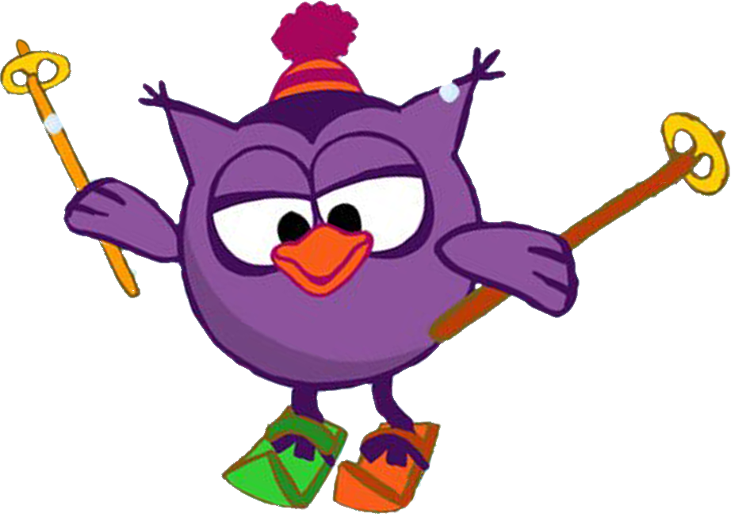
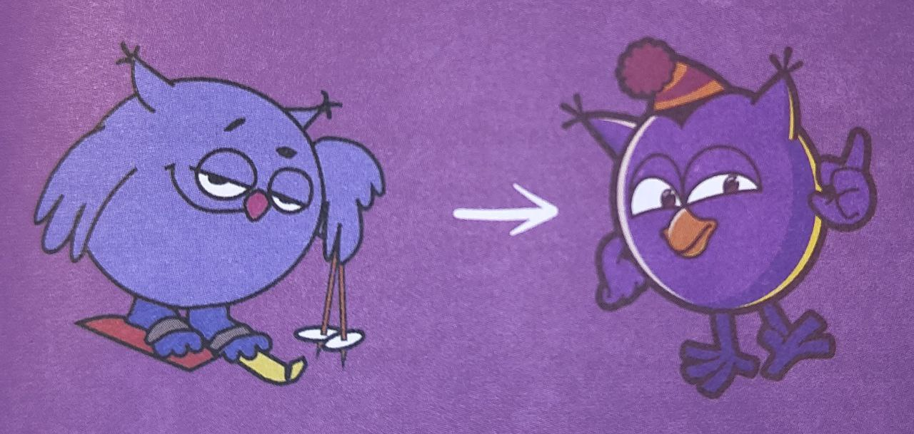
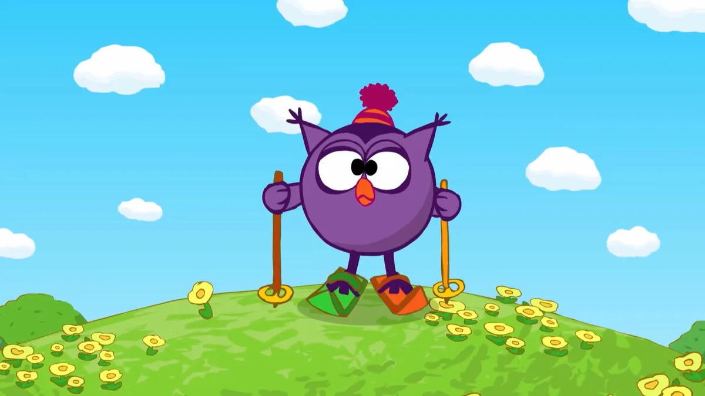
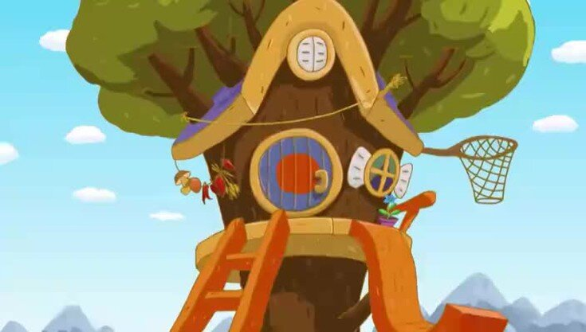

Поначалу женский персонаж был один Нюша. Но она получилась больно уж взбалмошной. Чтобы сбалансировать историю, добавили мудрую Совунью. Любопытно, что в первых версиях описания она всегда ходила на лыжах, даже дома, а жилищем ей служил кубок за окончание школы.

Нюше достались все проявления тотальной женственности, - делится Алексей Лебедев. - А Совунье мы подарили жизненный опыт и разбитое сердце. Свинка слишком мала для глубоких терзаний ну разбито и разбито, потом склеится. А у Совуньи это приобретает весомость едва ли не трагедии всей жизни.
Спортсменка, у которой лыжи едут всегда, в том числе по асфальту. Доктор всея долины. В зависимости от настроения предложит пациенту таблетки либо подорожник. Мировая бабушка с рецептами на любой случай жизни, в чьем сердце умещаются все, даже робот Биби. Порой из-за излишней дисциплинированности и желания всех окружить заботой превращается в контрол-фрика.

Я опирался на образ моей давней знакомой Ольги Николаевны Мурашко, педагога и заведующей режиссёрским управлением петербургского ТЮЗа, - рассказывает озвучивший Совунью Сергей Мардарь. — Потом смотрел в сторону Совы из «Винни-Пуха». Но делать кальку было неловко, да и она там постоянно будто с насморком. Я подумал, «пролечил» её у ЛОРа, убрал флегматичность, добавил игривости в голосе. Уже в процессе записи родилась и коронная фраза «Ай, молодца!».
В англоязычной версии «Смешариков» Совунью зовут Ольга. Возможно, потому, что по-английски «сова» - owl. Созвучно.

Дом этой разносторонней совы находится на высоком холме. Её домик является огромным деревом, на верхушке которого развевается флажок из синей ткани в белый горошек. Подняться ко входу можно двумя путями: первый путь — простая рыжая лестница, второй путь — горка такого-же цвета, с которой Совунья часто съезжает на лыжах по срочному вызову или просто покататься. У домика есть 2 окна: одно внизу, одно вверху. Дверь своим видом напоминает мишень для стрельбы, что так и есть — с другой стороны в «яблочке» часто бывает воткнута стрела. Перед дверью расположена площадка, которую можно использовать как веранду для чаепития. Крыша покрашена в синий цвет, и из неё торчат ветви дуба. Также справа висит баскетбольная корзина.
В серии «Путь в приличное общество» Совунья прожгла утюгом свои панталоны в цветочек. С этого момента они стали кочевать по сериям от Совуньи к Кар-Карычу и обратно. Что бы это значило - остаётся только догадываться. Денис Чернов считает странствия многострадальных панталон очередной иллюстрацией факта, что «герои Ромашковой долины живут своей жизнью, а мы только подглядываем за ними».